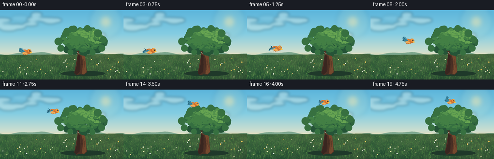
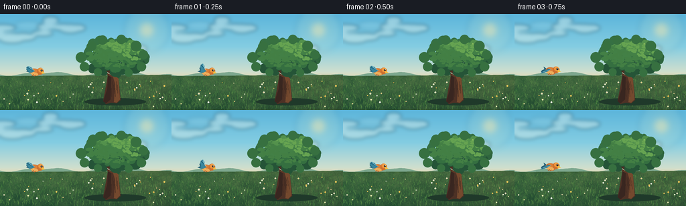

CODING AGENTS AS PIXEL WORLD MODELS
traex/DeepSeek-V4.1-Flash · dynamic_spatial_relationship_0048
点击播放 · 原生 RGB 像素
此结果可播放，但该运行尚未通过最终提交审核。页面展示不代表评测通过。
逐轮保存的候选
回放视频、检查图与代码变化。
每份候选均可单独播放。实际图片检查记录在下方工具轨迹中。
候选 01播放与检查图
点击播放 · 原生 RGB 像素


展开代码变化
--- 上一保存版本
+++ 本次保存版本
@@ -0,0 +1,538 @@
+from __future__ import annotations
+
+import math
+from pathlib import Path
+
+import imageio.v2 as imageio
+import numpy as np
+from PIL import Image, ImageDraw, ImageFilter
+
+import artifact_io
+
+
+W, H = 256, 144
+SS = 4
+N = 20
+FPS = 4.0
+CASE_DIR = Path(__file__).resolve().parent
+
+
+def vertical_gradient(stops: list[tuple[float, tuple[int, int, int]]]) -> Image.Image:
+ ys = np.arange(H * SS, dtype=np.float32) / (H * SS - 1)
+ positions = np.array([stop[0] for stop in stops], dtype=np.float32)
+ colors = np.array([stop[1] for stop in stops], dtype=np.float32)
+ out = np.empty((H * SS, W * SS, 3), dtype=np.uint8)
+ for channel in range(3):
+ out[:, :, channel] = np.interp(ys, positions, colors[:, channel]).astype(np.uint8)[:, None]
+ return Image.fromarray(out)
+
+
+def smooth_noise(seed: int, size: tuple[int, int], scale: int = 8) -> np.ndarray:
+ rng = np.random.default_rng(seed)
+ low = rng.random((max(2, size[1] // scale), max(2, size[0] // scale)), dtype=np.float32)
+ image = Image.fromarray(np.uint8(np.clip(low, 0, 1) * 255))
+ image = image.resize(size, Image.Resampling.BICUBIC)
+ data = np.asarray(image, dtype=np.float32) / 255.0
+ return data * 2.0 - 1.0
+
+
+def make_background() -> Image.Image:
+ hi_w, hi_h = W * SS, H * SS
+ image = vertical_gradient(
+ [
+ (0.00, (92, 181, 219)),
+ (0.34, (132, 205, 226)),
+ (0.60, (207, 223, 206)),
+ (0.70, (247, 218, 169)),
+ (1.00, (236, 201, 148)),
+ ]
+ ).convert("RGBA")
+
+ # Warm low sun and a broad atmospheric halo.
+ glow = Image.new("RGBA", image.size, (0, 0, 0, 0))
+ gd = ImageDraw.Draw(glow)
+ sx, sy = 219 * SS, 24 * SS
+ for radius, alpha in [(34, 18), (25, 26), (17, 40), (10, 130)]:
+ r = radius * SS
+ gd.ellipse((sx - r, sy - r, sx + r, sy + r), fill=(255, 236, 174, alpha))
+ glow = glow.filter(ImageFilter.GaussianBlur(4 * SS))
+ image = Image.alpha_composite(image, glow)
+
+ # Distant hills use cool, hazy greens to separate them from the meadow.
+ draw = ImageDraw.Draw(image)
+ far_points = [(-20 * SS, 98 * SS)]
+ for x in range(-20, W + 21, 4):
+ y = 89.5 + 2.0 * math.sin(x * 0.055 + 0.8) + 1.2 * math.sin(x * 0.12)
+ far_points.append((x * SS, int(y * SS)))
+ far_points.extend([((W + 20) * SS, 112 * SS), (-20 * SS, 112 * SS)])
+ draw.polygon(far_points, fill=(125, 167, 142, 255))
+
+ near_points = [(-20 * SS, 101 * SS)]
+ for x in range(-20, W + 21, 3):
+ y = 95.2 + 3.3 * math.sin(x * 0.040 - 0.2) + 1.2 * math.sin(x * 0.10 + 1.7)
+ near_points.append((x * SS, int(y * SS)))
+ near_points.extend([((W + 20) * SS, 116 * SS), (-20 * SS, 116 * SS)])
+ draw.polygon(near_points, fill=(78, 127, 91, 255))
+
+ # Meadow gradient with soft color variation and fine grain.
+ meadow = np.empty((hi_h, hi_w, 3), dtype=np.float32)
+ yy = np.linspace(0.0, 1.0, hi_h, dtype=np.float32)[:, None]
+ top = np.array([100, 143, 78], dtype=np.float32)
+ bottom = np.array([42, 83, 53], dtype=np.float32)
+ meadow[:] = top + (bottom - top) * yy[:, :, None]
+ broad = smooth_noise(17, (hi_w, hi_h), scale=34)[:, :, None]
+ fine = smooth_noise(23, (hi_w, hi_h), scale=6)[:, :, None]
+ meadow += broad * np.array([9.0, 8.0, 4.0])
+ meadow += fine * np.array([5.0, 5.0, 3.0])
+ meadow[:, :, 0] += (np.linspace(0, 10, hi_w, dtype=np.float32)[None, :] * (yy > 0.63))
+ meadow_u8 = np.uint8(np.clip(meadow, 0, 255))
+ meadow_mask = Image.new("L", image.size, 0)
+ md = ImageDraw.Draw(meadow_mask)
+ md.polygon([(0, 93 * SS), (hi_w, 91 * SS), (hi_w, hi_h), (0, hi_h)], fill=255)
+ image.paste(Image.fromarray(meadow_u8), (0, 0), meadow_mask)
+
+ # Cloud banks, kept soft so the main spatial read stays simple.
+ rng = np.random.default_rng(101)
+ clouds = Image.new("RGBA", image.size, (0, 0, 0, 0))
+ cd = ImageDraw.Draw(clouds)
+ for base_x, base_y, spread, count in [(20, 31, 20, 7), (89, 18, 18, 6), (198, 54, 15, 5)]:
+ for _ in range(count):
+ x = (base_x + rng.normal(0, spread)) * SS
+ y = (base_y + rng.normal(0, spread * 0.25)) * SS
+ rx = rng.uniform(9, 22) * SS
+ ry = rng.uniform(3.5, 7.0) * SS
+ cd.ellipse((x - rx, y - ry, x + rx, y + ry), fill=(255, 250, 232, 82))
+ clouds = clouds.filter(ImageFilter.GaussianBlur(2.8 * SS))
+ image = Image.alpha_composite(image, clouds)
+
+ # Grass blades and flowers give the meadow scale without distracting from the action.
+ draw = ImageDraw.Draw(image)
+ rng = np.random.default_rng(303)
+ for _ in range(1150):
+ x = rng.uniform(0, W)
+ y = rng.uniform(97, H)
+ depth = (y - 96) / (H - 96)
+ length = rng.uniform(1.3, 3.3) + depth * rng.uniform(1.2, 4.2)
+ lean = rng.uniform(-1.4, 1.4) * (0.5 + depth)
+ color = rng.choice(
+ [(58, 111, 58), (74, 126, 63), (93, 143, 71), (43, 91, 53)]
+ )
+ draw.line(
+ [(x * SS, y * SS), ((x + lean) * SS, (y - length) * SS)],
+ fill=(*map(int, color), 205),
+ width=max(1, int(SS * 0.6)),
+ )
+
+ for _ in range(48):
+ x = rng.uniform(4, W - 4)
+ y = rng.uniform(100, H - 5)
+ if 118 < x < 221 and y > 120:
+ continue
+ radius = rng.uniform(0.55, 1.25)
+ color = rng.choice([(244, 234, 180), (250, 249, 226), (246, 202, 91)])
+ draw.ellipse(
+ ((x - radius) * SS, (y - radius) * SS, (x + radius) * SS, (y + radius) * SS),
+ fill=(*map(int, color), 255),
+ )
+ if rng.random() < 0.55:
+ draw.ellipse(
+ ((x - 0.35) * SS, (y - 0.35) * SS, (x + 0.35) * SS, (y + 0.35) * SS),
+ fill=(213, 151, 57, 255),
+ )
+
+ return image
+
+
+def draw_tree(image: Image.Image, frame: int) -> Image.Image:
+ draw = ImageDraw.Draw(image, "RGBA")
+
+ # Ground shadow and roots anchor the tree in the meadow.
+ draw.ellipse((126 * SS, 126 * SS, 218 * SS, 137 * SS), fill=(31, 57, 42, 75))
+ draw.polygon(
+ [
+ (161 * SS, 92 * SS),
+ (176 * SS, 92 * SS),
+ (180 * SS, 129 * SS),
+ (174 * SS, 134 * SS),
+ (166 * SS, 133 * SS),
+ (158 * SS, 135 * SS),
+ (154 * SS, 130 * SS),
+ ],
+ fill=(77, 49, 37, 255),
+ )
+ draw.polygon(
+ [
+ (168 * SS, 92 * SS),
+ (176 * SS, 92 * SS),
+ (179 * SS, 128 * SS),
+ (174 * SS, 133 * SS),
+ (170 * SS, 132 * SS),
+ (172 * SS, 105 * SS),
+ ],
+ fill=(116, 73, 46, 255),
+ )
+ draw.polygon(
+ [
+ (161 * SS, 92 * SS),
+ (166 * SS, 92 * SS),
+ (165 * SS, 128 * SS),
+ (158 * SS, 134 * SS),
+ (154 * SS, 131 * SS),
+ (160 * SS, 112 * SS),
+ ],
+ fill=(57, 38, 32, 255),
+ )
+
+ # Branches read through the lower canopy.
+ draw.line([(168 * SS, 90 * SS), (144 * SS, 73 * SS)], fill=(74, 47, 34, 255), width=4 * SS)
+ draw.line([(171 * SS, 91 * SS), (196 * SS, 71 * SS)], fill=(74, 47, 34, 255), width=4 * SS)
+ draw.line([(168 * SS, 94 * SS), (149 * SS, 84 * SS)], fill=(91, 56, 38, 255), width=3 * SS)
+
+ # Small bark grooves add detail at the native resolution.
+ bark = ImageDraw.Draw(image, "RGBA")
+ for i in range(8):
+ x = 162.5 + i * 1.8
+ y0 = 101 + (i % 3) * 5
+ bark.line(
+ [(x * SS, y0 * SS), ((x + 0.6) * SS, (y0 + 13) * SS)],
+ fill=(55, 37, 29, 125),
+ width=max(1, int(0.55 * SS)),
+ )
+
+ # Layered canopy clusters. Light comes from the upper right.
+ rng = np.random.default_rng(707)
+ sway = math.sin(frame * 0.42) * 0.38
+ clusters = []
+ for _ in range(94):
+ angle = rng.uniform(0, 2 * math.pi)
+ radial = math.sqrt(rng.random())
+ x = 171 + math.cos(angle) * radial * 48
+ y = 64 + math.sin(angle) * radial * 27
+ rx = rng.uniform(4.5, 11.5) * (1.05 - radial * 0.28)
+ ry = rng.uniform(3.5, 9.5) * (1.05 - radial * 0.20)
+ clusters.append((x, y, rx, ry, radial))
+ clusters.sort(key=lambda item: (item[1] > 65, -item[4]))
+
+ for x, y, rx, ry, radial in clusters:
+ x += sway * (1.3 - radial)
+ if y < 59:
+ color = (54, 112, 67, 255)
+ elif y < 69:
+ color = (47, 101, 62, 255)
+ else:
+ color = (37, 84, 55, 255)
+ draw.ellipse(
+ ((x - rx) * SS, (y - ry) * SS, (x + rx) * SS, (y + ry) * SS),
+ fill=color,
+ )
+
+ # Mid-tone leaf masses create the rounded, readable crown silhouette.
+ for _ in range(105):
+ angle = rng.uniform(0, 2 * math.pi)
+ radial = math.sqrt(rng.random()) * 0.96
+ x = 172 + math.cos(angle) * radial * 43 + 1.5
+ y = 63 + math.sin(angle) * radial * 23 - 1.5
+ x += sway * (1.3 - radial)
+ rx = rng.uniform(2.8, 7.2)
+ ry = rng.uniform(2.0, 5.8)
+ if y < 54:
+ color = (83, 145, 76, 245)
+ elif y < 68:
+ color = (67, 128, 70, 245)
+ else:
+ color = (53, 111, 64, 245)
+ draw.ellipse(((x - rx) * SS, (y - ry) * SS, (x + rx) * SS, (y + ry) * SS), fill=color)
+
+ # Sunlit leaf dabs and fine edge variation.
+ for _ in range(165):
+ angle = rng.uniform(0, 2 * math.pi)
+ radial = math.sqrt(rng.random()) * 0.94
+ x = 174 + math.cos(angle) * radial * 40
+ y = 61 + math.sin(angle) * radial * 21
+ x += sway * (1.3 - radial)
+ rx = rng.uniform(1.0, 3.4)
+ ry = rng.uniform(0.7, 2.4)
+ lit = ((x - 140) / 62) * 0.45 + ((72 - y) / 45) * 0.55
+ if lit > 0.72:
+ color = (137, 184, 93, 245)
+ elif lit > 0.44:
+ color = (102, 163, 81, 240)
+ else:
+ color = (67, 127, 68, 225)
+ draw.ellipse(((x - rx) * SS, (y - ry) * SS, (x + rx) * SS, (y + ry) * SS), fill=color)
+
+ # A few leaf clusters extend the crown edge and keep the silhouette organic.
+ for x, y, r in [
+ (121, 65, 8),
+ (126, 79, 7),
+ (137, 48, 7),
+ (153, 39, 7),
+ (181, 38, 7),
+ (203, 48, 8),
+ (214, 61, 7),
+ (211, 79, 7),
+ (192, 88, 6),
+ (146, 87, 6),
+ ]:
+ x += sway
+ draw.ellipse(((x - r) * SS, (y - r) * SS, (x + r) * SS, (y + r) * SS), fill=(55, 112, 64, 255))
+
+ return image
+
+
+def cubic_bezier(p0, p1, p2, p3, t: float) -> tuple[float, float]:
+ u = 1.0 - t
+ x = u**3 * p0[0] + 3 * u**2 * t * p1[0] + 3 * u * t**2 * p2[0] + t**3 * p3[0]
+ y = u**3 * p0[1] + 3 * u**2 * t * p1[1] + 3 * u * t**2 * p2[1] + t**3 * p3[1]
+ return x, y
+
+
+def local_point(origin, point, scale: float) -> tuple[float, float]:
+ return (origin[0] + point[0] * scale * SS, origin[1] + point[1] * scale * SS)
+
+
+def draw_feather(
+ draw: ImageDraw.ImageDraw,
+ origin: tuple[float, float],
+ points: list[tuple[float, float]],
+ fill: tuple[int, int, int, int],
+ scale: float,
+) -> None:
+ draw.polygon([local_point(origin, point, scale) for point in points], fill=fill)
+
+
+def draw_bird(image: Image.Image, center: tuple[float, float], scale: float, phase: float) -> Image.Image:
+ sprite_size = int(58 * scale * SS)
+ sprite = Image.new("RGBA", (sprite_size, sprite_size), (0, 0, 0, 0))
+ draw = ImageDraw.Draw(sprite, "RGBA")
+ origin = (sprite_size * 0.50, sprite_size * 0.53)
+ lift = math.sin(phase)
+ wing_angle = math.pi + lift * 0.82
+ length = 13.2
+ tip = (math.cos(wing_angle) * length, math.sin(wing_angle) * length)
+ side = 1.0 if lift >= 0 else -1.0
+
+ # Far wing sits behind the body and is a little cooler and darker.
+ far_shift = (-2.0, 1.0)
+ far_tip = (tip[0] - 1.0, tip[1] + side * 1.5)
+ draw_feather(
+ draw,
+ origin,
+ [
+ far_shift,
+ (-4.0, -1.4),
+ (far_tip[0] * 0.62, far_tip[1] * 0.62 - 1.4),
+ far_tip,
+ (far_tip[0] * 0.72 - 3.0, far_tip[1] * 0.72 + 2.8),
+ (-7.0, 3.0),
+ ],
+ (39, 91, 112, 255),
+ scale,
+ )
+
+ # Tail feathers.
+ draw_feather(
+ draw,
+ origin,
+ [(-4.0, 0.0), (-11.2, -3.2), (-9.3, 0.1), (-12.5, 2.4), (-6.2, 3.1)],
+ (34, 89, 111, 255),
+ scale,
+ )
+ draw_feather(
+ draw,
+ origin,
+ [(-5.0, 0.6), (-9.5, -1.2), (-8.1, 1.1), (-10.4, 2.5), (-5.7, 2.4)],
+ (53, 116, 133, 255),
+ scale,
+ )
+
+ # Warm breast and back.
+ draw.ellipse(
+ (
+ *local_point(origin, (-7.2, -4.5), scale),
+ *local_point(origin, (7.1, 5.4), scale),
+ ),
+ fill=(197, 105, 48, 255),
+ )
+ draw.ellipse(
+ (
+ *local_point(origin, (-5.7, 0.4), scale),
+ *local_point(origin, (4.9, 5.0), scale),
+ ),
+ fill=(237, 174, 91, 255),
+ )
+ draw.ellipse(
+ (
+ *local_point(origin, (-4.5, -4.0), scale),
+ *local_point(origin, (3.8, 0.6), scale),
+ ),
+ fill=(220, 128, 55, 255),
+ )
+
+ # Head, eye, and beak.
+ draw.ellipse(
+ (
+ *local_point(origin, (2.1, -7.3), scale),
+ *local_point(origin, (11.3, 2.0), scale),
+ ),
+ fill=(205, 112, 47, 255),
+ )
+ draw.ellipse(
+ (
+ *local_point(origin, (3.5, -7.0), scale),
+ *local_point(origin, (10.0, -1.0), scale),
+ ),
+ fill=(236, 148, 62, 255),
+ )
+ draw.polygon(
+ [
+ local_point(origin, (9.0, -3.8), scale),
+ local_point(origin, (13.7, -1.4), scale),
+ local_point(origin, (9.2, 0.3), scale),
+ ],
+ fill=(246, 189, 63, 255),
+ )
+ draw.ellipse(
+ (
+ *local_point(origin, (6.9, -5.4), scale),
+ *local_point(origin, (9.5, -2.7), scale),
+ ),
+ fill=(30, 39, 43, 255),
+ )
+ draw.ellipse(
+ (
+ *local_point(origin, (8.1, -5.1), scale),
+ *local_point(origin, (9.0, -4.2), scale),
+ ),
+ fill=(247, 245, 215, 255),
+ )
+
+ # Near wing: a broad blue plane with three separated primary feathers.
+ near_tip = tip
+ draw_feather(
+ draw,
+ origin,
+ [
+ (0.0, -1.2),
+ (-3.4, -2.0),
+ (near_tip[0] * 0.58, near_tip[1] * 0.58 - 2.0),
+ near_tip,
+ (near_tip[0] * 0.72 - 2.5, near_tip[1] * 0.72 + 3.0),
+ (-8.0, 3.2),
+ ],
+ (49, 126, 153, 255),
+ scale,
+ )
+ for offset, color in [(-1.5, (70, 151, 174, 255)), (1.2, (35, 101, 131, 255)), (3.5, (58, 135, 157, 255))]:
+ feather_tip = (near_tip[0] * 0.96 - offset * 0.55, near_tip[1] * 0.96 + offset * 0.55)
+ draw_feather(
+ draw,
+ origin,
+ [
+ (-3.0 + offset * 0.25, 0.3),
+ (feather_tip[0] * 0.56, feather_tip[1] * 0.56),
+ feather_tip,
+ (feather_tip[0] * 0.70 - 2.2, feather_tip[1] * 0.70 + 1.9),
+ (-6.0 + offset * 0.35, 2.6),
+ ],
+ color,
+ scale,
+ )
+ draw.line(
+ [local_point(origin, (-0.5, -1.0), scale), local_point(origin, (near_tip[0] * 0.82, near_tip[1] * 0.82), scale)],
+ fill=(175, 219, 210, 150),
+ width=max(1, int(0.55 * scale * SS)),
+ )
+
+ # Tucked feet and a tiny warm rim light on the head.
+ draw.line(
+ [local_point(origin, (-0.8, 4.0), scale), local_point(origin, (-2.8, 6.3), scale)],
+ fill=(176, 92, 41, 255),
+ width=max(1, int(0.75 * scale * SS)),
+ )
+ draw.line(
+ [local_point(origin, (1.4, 4.1), scale), local_point(origin, (0.0, 6.2), scale)],
+ fill=(176, 92, 41, 255),
+ width=max(1, int(0.75 * scale * SS)),
+ )
+ draw.arc(
+ (
+ *local_point(origin, (4.3, -7.0), scale),
+ *local_point(origin, (10.7, -1.4), scale),
+ ),
+ 200,
+ 333,
+ fill=(255, 201, 100, 210),
+ width=max(1, int(0.55 * scale * SS)),
+ )
+
+ angle = -15.0 + 2.4 * math.sin(phase * 0.5)
+ rotated = sprite.rotate(angle, resample=Image.Resampling.BICUBIC, expand=False)
+ image.alpha_composite(
+ rotated,
+ (
+ int(round(center[0] - sprite_size / 2)),
+ int(round(center[1] - sprite_size / 2)),
+ ),
+ )
+ return image
+
+
+def bird_position(frame: int) -> tuple[tuple[float, float], float, float]:
+ u = frame / (N - 1)
+ eased = u * u * u * (u * (u * 6.0 - 15.0) + 10.0)
+ x, y = cubic_bezier((53, 85), (72, 66), (105, 39), (165, 23), eased)
+ scale = 1.08 - 0.13 * eased
+ phase = 2.0 * math.pi * (0.08 + u * 3.15)
+ return (x, y), scale, phase
+
+
+def render_frames() -> np.ndarray:
+ base = make_background()
+ frames = []
+ for frame in range(N):
+ canvas = base.copy()
+ canvas = draw_tree(canvas, frame)
+ center, scale, phase = bird_position(frame)
+ canvas = draw_bird(canvas, (center[0] * SS, center[1] * SS), scale, phase)
+
+ # Gentle cloud drift is baked into each frame as a final atmospheric layer.
+ drift = frame * 0.24
+ haze = Image.new("RGBA", canvas.size, (0, 0, 0, 0))
+ hd = ImageDraw.Draw(haze)
+ hd.ellipse(
+ (
+ (22 + drift) * SS,
+ 10 * SS,
+ (61 + drift) * SS,
+ 24 * SS,
+ ),
+ fill=(255, 253, 236, 24),
+ )
+ haze = haze.filter(ImageFilter.GaussianBlur(3.5 * SS))
+ canvas = Image.alpha_composite(canvas, haze)
+
+ frame_rgb = canvas.convert("RGB").resize((W, H), Image.Resampling.LANCZOS)
+ frames.append(np.asarray(frame_rgb, dtype=np.uint8))
+ return np.stack(frames, axis=0)
+
+
+def main() -> None:
+ frames = render_frames()
+ artifact_io.save(frames, CASE_DIR)
+ imageio.mimsave(
+ CASE_DIR / "output.mp4",
+ list(frames),
+ fps=FPS,
+ codec="libx264",
+ quality=9,
+ pixelformat="yuv420p",
+ ffmpeg_params=["-crf", "16", "-movflags", "+faststart"],
+ )
+ print(f"Generated {len(frames)} frames at {W}x{H}, {FPS:g} fps")
+ print("First bird center:", bird_position(0)[0])
+ print("Last bird center:", bird_position(N - 1)[0])
+
+
+if __name__ == "__main__":
+ main()
可观测工具轨迹
实际执行的命令与返回图片。
命令 1exit 0
/bin/bash -c "pwd && rg --files -g '"'!**/.git/**'"' | sed -n '1,160p'"
命令 2exit 0
/bin/bash -c "sed -n '1,240p' prompt.txt"
命令 3exit 0
/bin/bash -c "sed -n '1,260p' GENERATION_RULES.md"
命令 4exit 0
/bin/bash -c 'cat task_spec.json'
命令 5exit 0
/bin/bash -c "sed -n '1,300p' artifact_io.py"
命令 6exit 0
/bin/bash -c "sed -n '1,320p' player_template.html"
命令 7exit 0
/bin/bash -c 'command -v ffmpeg || true; ffmpeg -version 2>/dev/null | head -n 2 || true'
命令 8exit 0
/bin/bash -c "python - <<'PY'
import PIL, numpy
print('PIL', PIL.__version__)
print('numpy', numpy.__version__)
try:
import imageio
print('imageio', imageio.__version__)
except Exception as e: print('imageio missing', e)
PY"命令 9exit 0
/bin/bash -c "python - <<'PY'
import imageio
try:
print(imageio.get_writer('/tmp/test.mp4', fps=4))
except Exception as e:
print(type(e).__name__, e)
PY"命令 10exit 1
/bin/bash -c 'python generate.py'
命令 11exit 0
/bin/bash -c 'python generate.py'
命令 12exit 1
/bin/bash -c "python - <<'PY'
from PIL import Image
im=Image.open('inspection.png')
im.resize((im.width*2,im.height*2), Image.Resampling.NEAREST).save('/tmp/inspection2x.png')
print(im.size)
PY"命令 13exit 0
/bin/bash -c 'command -v chafa || command -v viu || command -v jp2 || command -v img2txt || true'
命令 14exit 127
/bin/bash -c 'ls -lh generate.py output.mp4 pixels.npz inspection.png transition_check.png frames/00.png frames/19.png && file output.mp4 && du -sh frames'
命令 15exit 0
/bin/bash -c "python - <<'PY'
import imageio.v2 as iio, numpy as np
r=iio.get_reader('output.mp4')
meta=r.get_meta_data()
frames=[np.asarray(x) for x in r]
a=np.stack(frames)
print('meta',meta)
print('shape',a.shape,'dtype',a.dtype)
print('range',a.min(),a.max(),'mean',a.mean(axis=(0,1,2)).round(2))
d=np.abs(a[1:].astype(int)-a[:-1].astype(int))
print('per-frame mean abs delta',np.round(d.mean(axis=(1,2,3)),3).tolist())
print('unique colors final',len(np.unique(a[-1].reshape(-1,3),axis=0)))
PY"命令 16exit 0
/bin/bash -c "python - <<'PY' from PIL import Image import numpy as np, glob for fn in ['frames/00.png','frames/04.png','frames/08.png','frames/12.png','frames/16.png','frames/19.png']: a=np.asarray(Image.open(fn)).astype(int) r,g,b=a[:,:,0],a[:,:,1],a[:,:,2] orange=(r>150)&(r>g*1.15)&(g>b*1.25)&(r>b*1.8) blue=(b>85)&(b>r*1.05)&(g>r*1.10) mask=orange|blue ys,xs=np.where(mask) print(fn, 'bird-like bbox', (xs.min(),ys.min(),xs.max(),ys.max()) if len(xs) else None, 'pixels',len(xs)) PY"
命令 17exit 0
/bin/bash -c "python - <<'PY'
from PIL import Image, ImageDraw
frames=[Image.open(f'frames/{i:02d}.png') for i in range(20)]
sheet=Image.new('RGB',(5*256,4*144),(20,20,20))
for i,im in enumerate(frames): sheet.paste(im,((i%5)*256,(i//5)*144))
sheet.save('all_frames.png')
# Tight crops around the animated bird's path, enlarged 4x for local inspection.
centers=[(53,85),(56,82),(61,78),(67,73),(73,67),(79,61),(87,55),(96,49),(105,43),(114,39),(123,35),(132,31),(140,28),(148,26),(155,24),(160,23),(163,23),(164,23),(165,23),(165,23)]
crops=[]
for i,(x,y) in enumerate(centers):
im=frames[i].crop((x-20,y-18,x+20,y+18)).resize((160,144),Image.Resampling.NEAREST)
crops.append(im)
contact=Image.new('RGB',(5*160,4*144),(20,20,20))
for i,im in enumerate(crops): contact.paste(im,((i%5)*160,(i//5)*144))
contact.save('bird_contact.png')
print('created all_frames.png and bird_contact.png')
PY"命令 18exit 0
/bin/bash -c "python - <<'PY'
from PIL import Image
import numpy as np
for fi in [0,19]:
a=np.asarray(Image.open(f'frames/{fi:02d}.png').convert('RGB')).astype(float)
h,w,_=a.shape
# classify at native, then aggregate 4x3 blocks to 64x48 using priority for bird/tree.
r,g,b=a[:,:,0],a[:,:,1],a[:,:,2]
cls=np.full((h,w),' ',dtype='<U1')
cls[(b>r*1.02)&(b>g*1.02)]='.'
cls[(g>r*1.08)&(g>b*1.02)]='g'
cls[(g>r*1.18)&(g>b*1.12)&(g>65)]='G'
cls[(r>g*1.35)&(g>b*1.15)&(r>80)]='T'
cls[(b>g*1.12)&(g>r*1.2)&(b>90)]='B'
cls[(r>g*1.25)&(g>b*1.25)&(r>150)]='O'
# downsample max-priority categories
chars=[]
for yy in range(0,h,3):
row=''
for xx in range(0,w,4):
c=cls[yy:yy+3,xx:xx+4].ravel()
val=' '
for q in ['O','B','T','G','g','.']:
if q in c: val=q; break
row+=val
chars.append(row)
print('\\nFRAME',fi)
print('\\n'.join(chars))
PY"命令 19exit 0
/bin/bash -c "python - <<'PY'
from PIL import Image
import numpy as np
centers=[(53,85),(56,82),(61,78),(67,73),(73,67),(79,61),(87,55),(96,49),(105,43),(114,39),(123,35),(132,31),(140,28),(148,26),(155,24),(160,23),(163,23),(164,23),(165,23),(165,23)]
for i,(x,y) in enumerate(centers):
a=np.asarray(Image.open(f'frames/{i:02d}.png')).astype(int)
yy,xx=np.ogrid[:144,:256]
win=(abs(xx-x)<=18)&(abs(yy-y)<=15)
r,g,b=a[:,:,0],a[:,:,1],a[:,:,2]
orange=(r>135)&(r>g*1.25)&(g>b*1.2)&win
blue=(b>85)&(g>r*1.05)&(b>r*1.05)&win
total=int(orange.sum()+blue.sum())
if orange.any():
oy,ox=np.where(orange); ob=(int(ox.min()),int(oy.min()),int(ox.max()),int(oy.max()))
else: ob=None
print(f'{i:02d} center=({x},{y}) orange={int(orange.sum()):3d} blue={int(blue.sum()):3d} total={total:3d} orange_bbox={ob}')
PY"命令 20exit 0
/bin/bash -c "python - <<'PY'
from PIL import Image
import numpy as np
centers=[(53,85),(105,43),(165,23)]
for fi,(cx,cy) in zip([0,8,19],centers):
a=np.asarray(Image.open(f'frames/{fi:02d}.png')).astype(int)
x0,y0=cx-22,cy-19
crop=a[max(0,y0):y0+38,max(0,x0):x0+44]
print('\\nFRAME',fi,'crop origin',x0,y0)
for yy in range(0,crop.shape[0],2):
row=''
for xx in range(0,crop.shape[1],2):
p=crop[yy:yy+2,xx:xx+2].reshape(-1,3).mean(axis=0); r,g,b=p
if r>150 and r>g*1.18 and g>b*1.15: ch='O' # orange
elif r>115 and r>g*1.08 and g>b*1.15: ch='o'
elif b>95 and g>r*1.03 and b>r*1.05: ch='B' # blue
elif b>65 and g>r*1.02 and b>r*1.05: ch='b'
elif g>r*1.12 and g>b*1.03: ch='G' # tree green
elif g>r*1.04 and g>b*1.02: ch='g' # meadow
elif r>150 and g>120: ch='.' # sky bright
elif r>75 and g>120 and b>150: ch=' '
else: ch=','
row+=ch
print(row)
PY"命令 21exit 0
/bin/bash -c "python - <<'PY'
from generate import draw_bird, bird_position, SS
from PIL import Image
for i in [0,4,8,12,19]:
c,s,p=bird_position(i)
im=Image.new('RGBA',(256*SS,144*SS),(125,190,214,255))
im=draw_bird(im,(c[0]*SS,c[1]*SS),s,p)
im.convert('RGB').resize((256,144),Image.Resampling.LANCZOS).save(f'bird_check_{i:02d}.png')
print('saved bird diagnostics')
PY"命令 22exit 1
/bin/bash -c "python - <<'PY'
from PIL import Image
for i in [0,4,8,12,19]:
im=Image.open(f'bird_check_{i:02d}.png')
# crop around bird and show native-pixel colors as terminal truecolor blocks
from generate import bird_position
cx,cy,_=bird_position(i)
x0,y0=int(cx)-20,int(cy)-16
print('\\nFRAME',i,'center',round(cx,1),round(cy,1))
for y in range(max(0,y0),min(144,y0+32),2):
row=''
for x in range(max(0,x0),min(256,x0+40),2):
r,g,b=im.getpixel((x,y))
# background is blue (125,190,214)
if abs(r-125)<6 and abs(g-190)<6 and abs(b-214)<6: ch=' '
elif r>140 and r>g*1.15: ch='O'
elif b>100 and b>r*1.2: ch='B'
elif r<75 and g<75 and b<75: ch='#'
elif g>r*1.1: ch='G'
else: ch='+'
row+=ch
print(row)
PY"命令 23exit 0
/bin/bash -c "python - <<'PY'
from PIL import Image
from generate import bird_position
for i in [0,4,8,12,19]:
im=Image.open(f'bird_check_{i:02d}.png')
(cx,cy),_,_=bird_position(i)
x0,y0=int(cx)-20,int(cy)-16
print('\\nFRAME',i,'center',round(cx,1),round(cy,1))
for y in range(max(0,y0),min(144,y0+32),2):
row=''
for x in range(max(0,x0),min(256,x0+40),2):
r,g,b=im.getpixel((x,y))
if abs(r-125)<6 and abs(g-190)<6 and abs(b-214)<6: ch=' '
elif r>140 and r>g*1.15: ch='O'
elif b>100 and b>r*1.2: ch='B'
elif r<75 and g<75 and b<75: ch='#'
elif g>r*1.1: ch='G'
else: ch='+'
row+=ch
print(row)
PY"命令 24exit 0
/bin/bash -c "python - <<'PY'
from PIL import Image
import numpy as np
for fi in [0,8,19]:
a=np.asarray(Image.open(f'frames/{fi:02d}.png').convert('RGB')).astype(int)
r,g,b=a[:,:,0],a[:,:,1],a[:,:,2]
tree=(g>r*1.18)&(g>b*1.10)&(g>55)&(r<110)
# Ignore meadow: tree crown occupies upper-middle y<100, trunk lower center.
canopy=tree & (np.indices(tree.shape)[0]<96) & (np.indices(tree.shape)[1]>105) & (np.indices(tree.shape)[1]<225)
ys,xs=np.where(canopy)
print(f'frame {fi:02d}: canopy bbox x={xs.min()}..{xs.max()} y={ys.min()}..{ys.max()}')
PY"命令 25exit 0
/bin/bash -c "python - <<'PY'
from PIL import Image
import numpy as np
for fi in [0,8,19]:
a=np.asarray(Image.open(f'frames/{fi:02d}.png').convert('RGB')).astype(int)
r,g,b=a[:,:,0],a[:,:,1],a[:,:,2]
yy,xx=np.indices(r.shape)
# Locate warm/blue bird pixels in the vicinity of its known trajectory.
centers=[(53,85),(79,62),(165,23)]
cx,cy=centers[[0,8,19].index(fi)]
win=(abs(xx-cx)<22)&(abs(yy-cy)<17)
bird=(((r>150)&(r>g*1.2)&(g>b*1.15)) | ((b>95)&(b>r*1.05)&(g>r*1.10))) & win
tree=(g>r*1.18)&(g>b*1.10)&(g>55)&(r<110) & (yy<96) & (xx>105) & (xx<225)
ys,xs=np.where(bird); ty,tx=np.where(tree)
print(f'frame {fi:02d}: bird bbox=({xs.min()},{ys.min()})-({xs.max()},{ys.max()}) px={len(xs)}; canopy starts y={ty.min()}')
if fi==0: print(' left-of-tree:',xs.max()<tx.min())
if fi==19: print(' above-tree:',ys.max()<ty.min())
PY"命令 26exit 0
/bin/bash -c "python - <<'PY'
from PIL import Image
import numpy as np
for fi in [19]:
a=np.asarray(Image.open(f'frames/{fi:02d}.png').convert('RGB')).astype(int)
r,g,b=a[:,:,0],a[:,:,1],a[:,:,2]
yy,xx=np.indices(r.shape)
win=(abs(xx-165)<22)&(abs(yy-23)<17)
bird=(((r>150)&(r>g*1.2)&(g>b*1.15)) | ((b>95)&(b>r*1.05)&(g>r*1.10))) & win
tree=(g>r*1.18)&(g>b*1.10)&(g>55)&(r<110)&(yy<96)&(xx>105)&(xx<225)
for y in range(5,45):
bx=np.where(bird[y])[0]
if len(bx): print('bird row',y,bx.min(),bx.max())
for y in range(25,36):
tx=np.where(tree[y])[0]
print('tree row',y, (tx.min(),tx.max(),len(tx)) if len(tx) else None)
PY"命令 27exit 0
/bin/bash -c "python - <<'PY'
from PIL import Image
import numpy as np
a=np.asarray(Image.open('frames/19.png')).astype(int)
for x,y in [(144,7),(150,12),(160,18),(170,25),(179,31),(183,31)]: print((x,y),a[y,x].tolist())
# bbox of alpha-related? print connected components of blue-ish pixels
r,g,b=a[:,:,0],a[:,:,1],a[:,:,2]
mask=(b>95)&(b>r*1.05)&(g>r*1.10)
# components using scipy if avail
try:
from scipy.ndimage import label
lab,n=label(mask)
comps=[]
for i in range(1,n+1):
ys,xs=np.where(lab==i)
if len(xs)>20: comps.append((len(xs),(xs.min(),ys.min(),xs.max(),ys.max())))
print(sorted(comps,reverse=True)[:20])
except Exception as e: print(e)
PY"命令 28exit 0
/bin/bash -c "python - <<'PY'
from PIL import Image
import numpy as np
a=np.asarray(Image.open('frames/19.png')).astype(int)
for y in [23,25,27,29,31,33,35,37]:
row=[]
for x in range(145,188,3):
r,g,b=a[y,x]
if r>g*1.25 and g>b*1.1: c='O'
elif b>g*1.05 and g>r*1.15: c='B'
elif g>r*1.18: c='G'
elif b>r*1.05: c='b'
else: c='.'
row.append(c)
print(f'{y:02d}', ''.join(row))
print('Canopy top rows are green; bird lower edge should clear them.')
PY"命令 29exit 0
/bin/bash -c "python - <<'PY'
from PIL import Image
import numpy as np
im=Image.open('frames/19.png')
# Upscaled crop for direct visual review in the artifact directory.
im.crop((110,0,225,104)).resize((460,416),Image.Resampling.NEAREST).save('final_spatial_check.png')
# Also provide an enlarged inspection sheet generated from exact output frames.
frames=[Image.open(f'frames/{i:02d}.png') for i in range(20)]
sheet=Image.new('RGB',(5*256,4*144),(20,20,20))
for i,fr in enumerate(frames): sheet.paste(fr,((i%5)*256,(i//5)*144))
sheet.resize((5*512,4*288),Image.Resampling.NEAREST).save('all_frames_2x.png')
print('saved final_spatial_check.png and all_frames_2x.png')
PY"命令 30exit 0
/bin/bash -c 'git status --short 2>/dev/null || true'
命令 31exit 0
/bin/bash -c 'unlink bird_check_00.png; unlink bird_check_04.png; unlink bird_check_08.png; unlink bird_check_12.png; unlink bird_check_19.png'
命令 32exit 0
/bin/bash -c 'unlink bird_contact.png; unlink all_frames.png; unlink all_frames_2x.png; unlink final_spatial_check.png'
命令 33exit 0
/bin/bash -c "python - <<'PY'
from pathlib import Path
from PIL import Image
import imageio.v2 as iio
frames=sorted(Path('frames').glob('*.png'))
assert len(frames)==20, len(frames)
assert all(Image.open(p).size==(256,144) for p in frames)
reader=iio.get_reader('output.mp4')
meta=reader.get_meta_data()
count=sum(1 for _ in reader)
assert (meta['size'],meta['fps'],count)==((256,144),4.0,20), (meta,count)
assert Path('pixels.npz').is_file() and Path('index.html').is_file()
print('PASS: 20 RGB PNGs, 256x144; MP4 20 frames @ 4 fps; pixels.npz and index.html present')
print('Output:',Path('output.mp4').resolve())
print('Size:',Path('output.mp4').stat().st_size,'bytes')
PY"保存候选 1 份；完成命令 33 次；可验证图片返回 0 张。原始 API 响应与完整日志保留在本地。